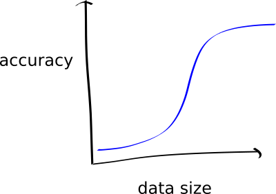

How much data do you need to retrain a classifier?
The code used for this blog-post is here.
A while ago, Gala had a great idea for a little animation: Give people an idea of how much data they need to train a machine learning model, by showing an animation of a model trained on, say, 5, 50, 500, 5,000, 50,000, 500,000 data points. The way I pictured it in my mind was that as you proceed to more and more data, the number of successful classifications gets larger; ultimately tapering off as we get to larger numbers. In my mind I saw it as the standard S-curve:

Quiz: Before reading the rest of this article, have a go at this quick quiz.
With the network and data-set we’re going to be focused on (the TensorFlow transfer learning example using InceptionV3), the expected validation accuracy is 90-95%, when run on the full data set (~700 images per class).
Note that this is using five kinds of flowers as the classes: tulip, rose, daisy, dandelion, sunflower.
Suppose we set aside 70 images per class for validation, in each of the following scenarios:
- Q1: If we use 50% of the remaining images, what would you expect the validation accuracy to be?
- Q2: If we only use 5% of the remaining images?
- Q3: If we only use 3 images in total per class?
- Q4: What about only 1 image per class!?
Background on Transfer Learning
For this article, we’re focusing on using a pre-trained network and specialising it to our specific (classification) task. This idea is called “Transfer Learnining”.
Here’s a picture that describes the idea:
There’s two steps:
First, you take some “pre-trained” network that is good at a particular task. That’s “1)” in the picture above; some network that is good a recognising trees, houses, and people. It’s been trained for this task and is really good at it.
Secondly, you cut off the final layer, and plug in your new classes that you want to predict. This gives you new parameters to learn (the edges coloured in magenta above). Then, you train your new network on your new data.
The point is, this network should have a lot of “juice” (i.e. learned recognition capability) in the earlier layers, that capture general-purpose structure; and the later layers, that you leave as learnable paremeters, allow the network to specialise to your task.
This is a really powerful idea in deep learning, and, in essence, is incredibly heavily used (from the idea of pre-trained word vectors, to pre-trained image classification networks, as we’re using here).
Let’s dive in
Here’s the plan:
- Follow the TensorFlow Transfer Learning Tutorial, but
- Create a “hold-out” dataset from the original dataset, say 10%,
- Create downsampled datasets, from the new dataset, of the following: 100%, 90%, 80%, 70%, 60%, 50%, 40%, 30%, 20%, 10%, 5%, as well as the 3-image and 1-image sets. Visually:

- Throw in some data augmentation, using imgaug,
- Train all these experiments,
- See how it all goes!
I’ve wrapped this up into a repo so you can reproduce my results: braneshop/how-much-data-experiments. Follow the link and check out the README if you want to run it yourself. It takes a few hours to run everything.
Results
Let’s take a look at the train/validation curves for all the training runs. You can click on the circle next to a given experiment name to show only that. Shift-click will show many at once. First, note that in the “just-1” and “just-3” image case, I hacked the normal training code to not worry about having any validation/test data allocation. As a result, we don’t have them in this graph.
Observations:
- When we have tiny data (the 5% case) the train loss is immediately tiny; and the val loss immediately high. This was my expectation.
- If we compare, say, the 100-image case and the 100 with 10x augmentation, the augmented version is worth in train and validation. This was surprising to me.
- There’s not a significant different in the curves between say the 100% case and the 50% case. This, again, was surprising to me.
- Augmentation always made both curves worse. I wasn’t expecting this, and am not yet cetrain why it’s the case. I have two main ideas: I used a very elaborate augmentation (the complicated one from the readme on the imgaug repo), maybe that was a mistake. I think ultimately, the augmented images don’t look much like the testing images, so they encouraged they network to do worse.
The real proof is in the accuracy against the holdout set, though, so let’s see how the models performed in this case. The following graph is the result of running all the models on the holdout images, and taking the maximum predicted value of all the resulting class predictions.
There were many surprising things about this graph for me. Notably, it doesn’t look like the graph that I predicted at the start (note that the axes are flipped), but probably the most shocking thing for me is this:
With just a single image per class, we get 68% accuracy on the holdout set! And with just 3 images, we get 75%! Recall that the holdout set consists of ~70 images per class.
Now, when I ran this initially, I hand-picked the 1-image and 3-images per class. I picked ones that looked pretty good, but I was still amazed at the results! I set up a notebook to run a few different examples of that, and I also evaluated the accuracy with the threshold approach, instead of the argmax; here are a few runs:
seed = 1 seed = 2 seed = 3
1 image 1 image 1 image
max: 0.5 max: 0.53 max: 0.55
threshold (0.5): 0.3 threshold (0.5): 0.38 threshold (0.5): 0.39
threshold (0.8): 0.13 threshold (0.8): 0.18 threshold (0.8): 0.15
3 images 3 images 3 images
max: 0.68 max: 0.66 max: 0.67
threshold (0.5): 0.55 threshold (0.5): 0.51 threshold (0.5): 0.54
threshold (0.8): 0.23 threshold (0.8): 0.25 threshold (0.8): 0.23You can see that for randomly-picked images, the argmax sits aroud 53% for 1 image, and 67% for three images.
The point is, to me it’s quite amazing to see that picking the argmax, instead of using the threshold, gives such a radical improvement on withheld data.
I’ve made a notebook on Google Colaboratory, so if you have a Google account, you can run the experiments for yourself (you’ll have to save it as a new copy).
Discussion
For me, this was quite surprising. For one, I didn’t see the improvement at the middle-range of data that I was expecting (50% training data wasn’t much better than 100%, excluding the holdout set). But moreso, just how much juice can be squeezed out of this particular network + a handful of images is amazing.
The main thing this highlights to me is the power of semi-supervised learning, active learning, and One-shot learning.
Specifically, it suggests to me that the best thing to do is to set up a learning+data acquisition process that makes predictions as fast as possible, and constantly learns as it goes:
Overall, the idea of incorporating data into a model as-it-infers isn’t new, but to me, again, what is surprising is just how little data you need to get started; at least in this specific case!
To reiterate differently: If you’re a business wondering how to adopt AI, one plan would be to build this kind of human-in-the-loop system, where any prediction that is, say, better than 50% chance of being right will be useful to humans. Then, have the humans feed this system as they use it, and it will radically improve with just a small number of confirmed answers!
So, to answer the question from the title, we might say “less than you think!”, if you have the right setup to incorporate new data into your system, as you go.
Open questions
- How do other models go in this measure? Say, segmentation models or bounding box models? Or NLP?
- Is it really right to think of the softmax layer as probabilities? Certainly it satisfies a probability-distribution constraint, but training seems to simply push these values more apart? i.e. we don’t really care if they are probabilities, if we’re just going to pick the largest. Further, maybe we should only ever think of the probability as the combination of the decision rule (say argmax or > 80%) and the holdout dataset that we evaluate that rule on.
- Why did augmentation make things worse? Did I over-do it? Related paper: Learning data augmentation policies using augmented random search.
- Could be build some kind of “dataset juicer” that tells us just how much juice we’ll get, for given increases in our labelled data, with respect to certain models and targets?
- Relatedly, it would be nice to calculate some kind of “potential-juice” measure where we look at the number of variables we’re going to retrain; the number of free variables in our data, and then consider what kind of space of we’ll explore in this domain.
Related papers
- Deep Learning Scaling is Predictable, Empirically - This is a deeper investigation into these ideas, across a few different model types. It empirically answers my first open question.
- Learning data augmentation policies using augmented random search.
Quiz answers
Using the maximum value of the class estimates (argmax):
- Q1: If we use 50% of the remaining images, what would you expect the validation accuracy to be? Answer: ~91%
- Q2: If we only use 5% of the remaining images? Answer: ~83%
- Q3: If we only use 3 images in total per class? Answer: ~67%
- Q4: What about only 1 image per class!? Answer: ~53%
The animation
Here’s my attempt at the animation (click to view):
The images with the red text above them are the ones where the inferences were wrong. Unfortunately (or fortunately!) it’s not very compelling, because all the accuracies are basically very high!